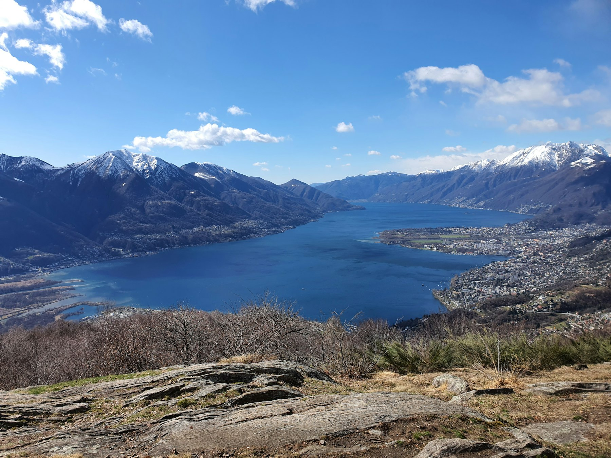

03 · Dal 1969
La nostra storia
Icosuolo Ingegneria e Costruzioni del Sottosuolo SA
VELA ICOS SA
- 1969Nasce a Locarno Icosuolo, Ingegneria e Costruzioni del Sottosuolo SA.
- 1999La società prende il nome VELA ICOS SA.
- 2021Nuovo scopo sociale: costruzioni, impresa generale, meccanica del suolo e fondazioni, progettazione, perizie e immobili.
